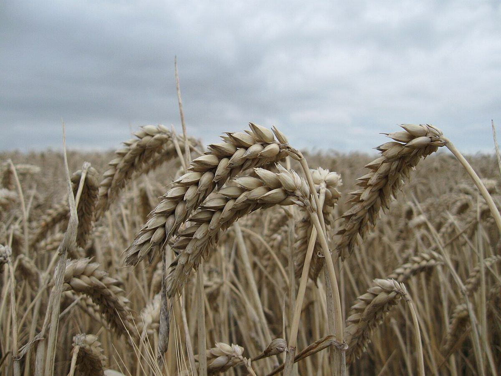

掲載写真はフリー素材のイメージで、店舗の実際の様子ではありません。他地域で撮影されたもの・撮影地が不明なものを含みます。
口コミ
ここに掲載するのは制作側が作成したイメージ例であり、実際のお客様の声ではありません。
- イメージ例
パンを選びに行く前に、営業日や最新の情報をInstagramで確かめられると助かります。そんな方を想定した例です。
- イメージ例
出かける前に、電話で相談できると安心です。気になることを直接たずねたい方を想定した例です。
- イメージ例
写真を見ながら、立ち寄ってみたい場所を探す方もいます。ページの写真から様子を想像したい方を想定した例です。

実際のお客様の声は、掲載準備ができ次第こちらに掲載します。(準備中)
最新の情報は Instagram でご覧いただけます。